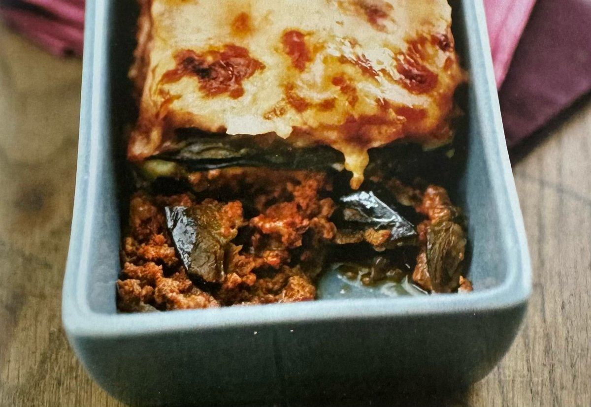

Moussaka
Ingredients
- 3 aubergines
- 2 courgettes
- 3 oignons
- 1 filet d'huile d'olive
- sel
- poivre
- 1 bouquet de persil plat
- 1 gousse d'ail
- 1 noisette de beurre
- 800 g d'agneau haché
- 3 pincées de cannelle
- 30 cl de coulis de tomate
- 50 g de beurre
- 50 g de farine
- 50 cl de lait
- 3 pincées de noix de muscade
- 80 g de gruyère râpé

Préparation
Étape 1
Couper en rondelles 3 aubergines et 2 courgettes. Éplucher et émincer 3 oignons.
Étape 2
Dans une sauteuse, chauffer 1 filet d'huile d'olive et rissoler 1 oignon 4min. Ajouter les aubergines et les courgettes et cuire environ 15min en remuant. Saler et poivrer bien avec du sel et du poivre.
Étape 3
Ciseler 1 bouquet de persil plat et hacher 1 gousse d'ail. Dans une grande poêle, fondre 1 noisette de beurre et rissoler les 2 oignons restants 4min. Ajouter l’ail, 800 g d'agneau haché et 3 pincées de cannelle, saler, poivrer et cuire 15min. Mélanger avec 30 cl de coulis de tomate et le persil.
Étape 4
Préparer la béchamel : fondre 50 g de beurre, ajouter 50 g de farine, puis 50 cl de lait petit à petit en fouettant jusqu’à épaississement. Ajouter 3 pincées de noix de muscade, du sel, du poivre et 80 g de gruyère râpé.
Étape 5
Dans le plat, alterner les couches de béchamel, de légumes et de viande, en terminant par la béchamel.
Étape 6
Enfourner environ 40min à 200ºC.
Conseils
- Pour 6 à 8 personnes.